Gyne Oncology, Menopause & the Breast
Week 5's older patient: post-menopausal bleeding and the endometrium, D&C and hysterectomy, the pelvic mass, menopause, the breast from lump to pathology report, and sexual health. Warm up with 25 questions to find your weak spots, work through the six topics (the step bar marks the ones you missed), then finish with a 51-question final. Every answer links back to the lecture it came from.
Warm-up quiz
Cold, no notes. It's a diagnostic, not a grade: your score per topic lands on the step bar and tells you where to spend the day.
Post-menopausal Bleeding
Any bleeding after menopause is endometrial cancer until you've shown it isn't. The pathway, the four biopsy reports, hyperplasia and the two endometrial cancers.
- PMB = any bleeding after 12 months without a period. It is endometrial cancer until proven otherwise. Usually it isn't, but the onus is on you to exclude it.
- Work-up: stable? → history → speculum + bimanual → TVUS + endometrial biopsy. A normal Pap doesn't clear her: it samples the cervix, not the endometrium.
- Endometrium < 5 mm is normal, on HRT or not. But recurrent bleeding with a thin lining still gets a biopsy: skipping it misses cancer 4% of the time.
- Commonest cause: atrophy (a diagnosis of exclusion). Most serious: hyperplasia or carcinoma. "Insufficient tissue" is no result: repeat the biopsy.
- Hyperplasia turns on atypia. Without → progestin (megestrol, LNG-IUD), re-biopsy at ~3 months. With → hysterectomy + BSO, because 30–40% already have cancer.
- Type 1 endometrioid (90%): estrogen-driven, hyperplasia first, better outcome. Type 2 serous (10%): estrogen-independent, atrophic lining, older women, worse outcome.
The work-up
| Test | What it gives you | The catch |
|---|---|---|
| Speculum exam | The cause in the office: endometrial mass at the os, ulcerated cervical mass | None. Always do it |
| TVUS | Endometrial thickness: < 5 mm normal | On HRT, > 50% measure > 5 mm; < 4% of those have pathology |
| Endometrial biopsy | 99.6% sensitive for cancer, in the office | Done blind: misses polyps and focal lesions |
| Sonohysterogram (SIS) | For a lining > 5 mm: finds focal lesions | Can't tell benign from malignant |
| Hysteroscopy | Sees and biopsies focal lesions; when office biopsy isn't possible | Surgical risks |
| D&C | When office sampling or hysteroscopy isn't available or possible | Half the time samples < 60% of the lining |
| Cause of PMB | Note |
|---|---|
| Atrophy (GSM) | Most common. A diagnosis of exclusion |
| Exogenous hormones | HRT is a common cause |
| Endometrial hyperplasia | The precursor: atypia decides management |
| Endometrial carcinoma | Must be ruled out in every patient |
| Endometrial polyp | Focal, so a blind biopsy misses it |
Four biopsies, one history
Same patient each time: 60, with PMB. The report, not the amount of tissue, decides what you say.
| Report | Says | What you tell her |
|---|---|---|
| #1 | Benign endocervical fragments. Insufficient endometrial tissue | Repeat the biopsy (you or gynecology). Non-diagnostic is not negative |
| #2 | Scant fragments of atrophic endometrium | Benign. Offer treatment for atrophy; come back if bleeding persists or recurs |
| #3 | Atypical hyperplasia | She may need a hysterectomy: refer to gynecology |
| #4 | Endometrioid adenocarcinoma | She needs a hysterectomy: refer to gynecology |
Who to refer, and what not to scan
| Scenario | Do |
|---|---|
| PMB + endometrial cancer risk factors | Refer to gynecology |
| PMB with endometrium > 5 mm or a "vascular pedicle" | Refer |
| Recurrent bleeding with focal pathology (e.g. a polyp) | Refer |
| No bleeding, thick lining found by chance | Don't routinely sample. Decide on her risk factors |
| On tamoxifen, no bleeding | No routine ultrasound |
| Asymptomatic polyp on ultrasound | Triage by polyp size, age and risk factors |
Atrophy
| Vulvar / vaginal atrophy looks like | Treatment (usually the family doctor) |
|---|---|
| Loss of labial fullness | Nothing, if it isn't bothering her |
| Pale urethral and vaginal epithelium | HRT |
| Narrow introitus · little moisture · loss of urethral meatal turgor | Local estrogen: vaginal cream, pill or ring |
Why it bleeds: low estrogen → microerosion, inflammation and spotting from small exposed vessels in the endometrium, vagina or vulva. It has to fit with everything else you found: atrophy is the answer only after cancer is excluded. The full GSM ladder is in the Menopause step.
Endometrial hyperplasia: it all turns on atypia
An overgrowth of the endometrial glands: the gland-to-stroma ratio rises and the glands look crowded. Same risk factors as type 1 cancer, nearly all of them prolonged unopposed estrogen.
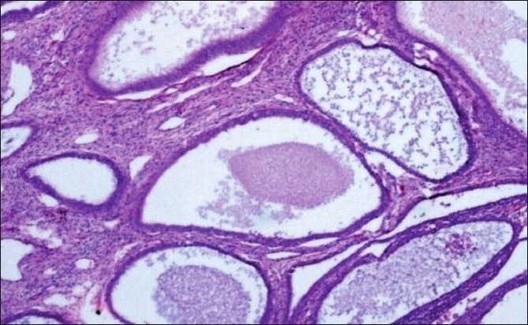
Hyperplasia without atypia: too many glands, crowded and dilated, but the cells lining them look bland. Rao, Sundaram & Narasimhan, CC BY 2.0, via Commons.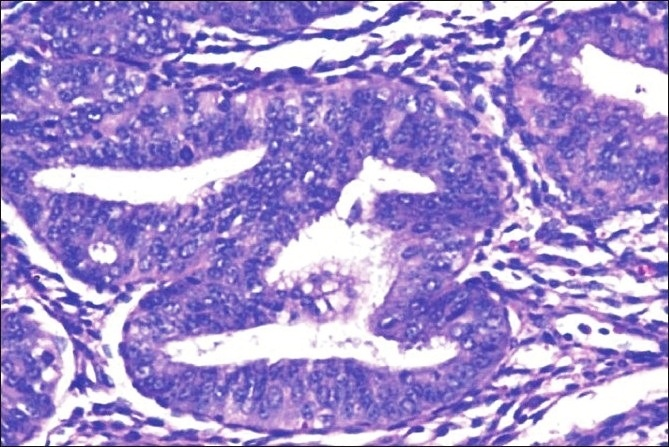
Atypical hyperplasia: crowded glands lined by stratified cells with enlarged, atypical nuclei. The nuclei, not the crowding, change the management. Rao, Sundaram & Narasimhan, CC BY 2.0, via Commons.| Hyperplasia without atypia | Atypical hyperplasia | |
|---|---|---|
| Cancer risk | Low: 1–3% | Up to 29%, and 30–40% already have carcinoma in the uterus |
| Management | Medical: progesterone (megestrol or a levonorgestrel IUD) | Surgical: hysterectomy + bilateral salpingo-oophorectomy |
| Follow-up | Repeat biopsy, usually at 3 months | Rule out concurrent cancer, then close follow-up |
| Also | Remove the cause: stop unopposed estrogen, lose weight | High-dose progesterone only if surgery is contraindicated |
| Unopposed estrogen comes from | Examples |
|---|---|
| Endogenous | Obesity (fat aromatase keeps making estrone) · PCOS · an estrogen-secreting tumour such as a granulosa cell tumour |
| Exogenous | Estrogen-only HRT · topical estrogen · tamoxifen |
| Associations | Infertility · nulliparity · early menarche · late menopause |
Endometrial carcinoma
| Type 1 | Type 2 | |
|---|---|---|
| Share | 90% | 10% |
| Histology | Endometrioid | Usually serous |
| Estrogen | Dependent: unopposed estrogen | Independent: usually no such history |
| Precursor | Endometrial hyperplasia | Arises in an atrophic endometrium |
| Who | Same risk factors as hyperplasia; Lynch sentinel cancer | Older women |
| Prognosis | Better | Poorer |
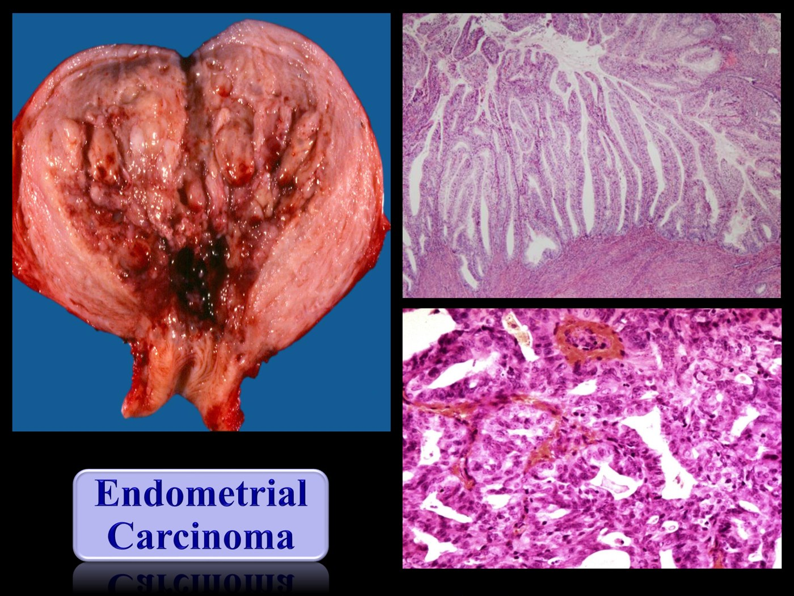
| Endometrial cancer | Key points |
|---|---|
| How common | The #1 gynecologic cancer; 4th commonest cancer in women; rising, possibly from obesity, diabetes, fewer pregnancies, earlier menarche and HRT (none proven) |
| Presents | Bleeding in 90%, and 72% are Stage 1 (confined to the uterus). Pelvic exam may be normal or show a big uterus |
| Spreads | Usually directly into myometrium or cervix, which opens the way to lymphovascular channels. Nodal, distant and transtubal spread are rare |
| Surgery | Hysterectomy + BSO (abdominal, laparoscopic or vaginal). Higher grade or stage: lymphadenectomy, ± radiation and/or chemotherapy |
| Staging | By the pathologist after resection (TNM, translated to FIGO). Stage decides adjuvant treatment |
| Cervical cancer risk | Endometrial cancer risk |
|---|---|
| HPV | Older age |
| Smoking | Unopposed estrogen (estrogen-only HRT) |
| More partners, younger first sex | Obesity; diabetes, hypertension, gallbladder disease |
| Immunosuppression | Early menarche, late menopause, PCOS, infertility, nulliparity |
| Long-term COC use | Tamoxifen |
| No regular screening | Lynch syndrome, possibly BRCA |
D&C & Hysterectomy
Emptying the uterus in early pregnancy, and taking it out: what each is for, how it's done, and what goes wrong.
- D&C = vacuum aspiration up to 14+0 weeks (rigid plastic cannula on electric suction), for first-trimester loss (incomplete, inevitable, missed) and therapeutic abortion. Not for an ectopic or endometritis; past 14+0 it's a D&E.
- Dilate in millimetres to the weeks (8 weeks → 8 mm). Prepare the cervix with misoprostol (1–12 h before) or laminaria / Dilapan (~24 h), unless it's already open (incomplete or inevitable abortion).
- Commonest complications: infection, retained products, hemorrhage. Antibiotic prophylaxis for therapeutic abortion, not missed abortion: chlamydia is commoner in that population.
- Pain with no bleeding = hematometra → re-evacuate now. Sharp or repeat curettage → Asherman's: adhesions, secondary amenorrhea, infertility.
- Hysterectomy ladder: vaginal (gold standard) → LAVH → TLH / robotic → abdominal. Only abdominal isn't minimally invasive (2–3 days in hospital). For bleeding, medical management comes first.
- Total = uterus + cervix; subtotal keeps the cervix. Only removing the ovaries causes surgical menopause.
D&C: what it is, and what it isn't for
| What | Vacuum aspiration of a pregnancy ≤ 14 weeks + 0 days |
| How | Rigid plastic cannula on an electric suction machine |
| Anesthesia | Local paracervical block ± conscious sedation, or a general anesthetic |
| For | First-trimester loss: incomplete, inevitable or missed abortion · therapeutic abortion |
| Not for | Ectopic (it isn't in the uterus) · endometritis (antibiotics) · > 14+0 weeks (that's a D&E) |
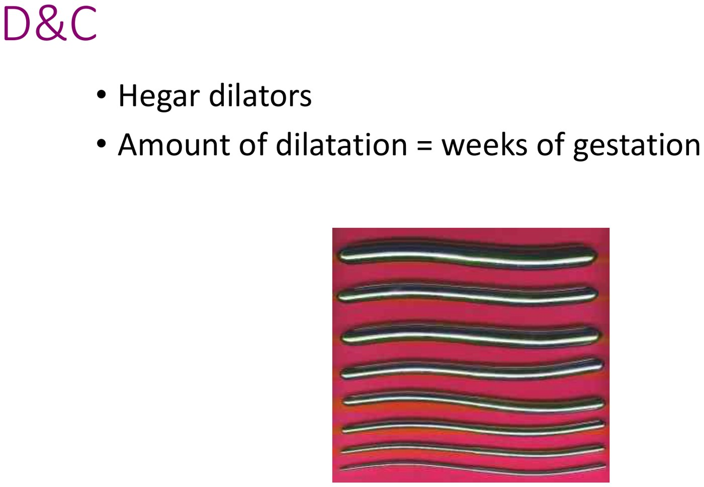
Hegar dilators, each end a different diameter in mm: dilate to the number of weeks. Slide from the lecture.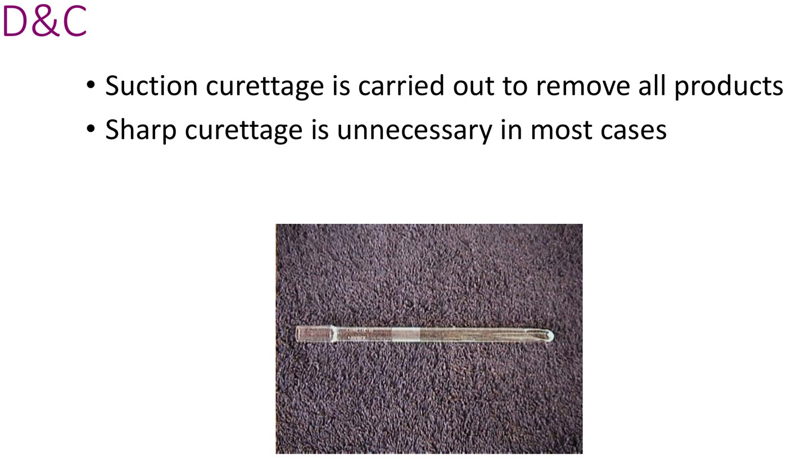
Suction curette. A sharp metal curette gives more feel that the uterus is empty, but more Asherman's. Slide from the lecture.Opening the cervix
| Method | Agent | When |
|---|---|---|
| Chemical | Misoprostol: oral, buccal or vaginal | 1–12 h before |
| Osmotic | Laminaria (dried kelp) or synthetic Dilapan, in the internal os | ~24 h before |
| None needed | Incomplete or inevitable abortion: the cervix is already open | |
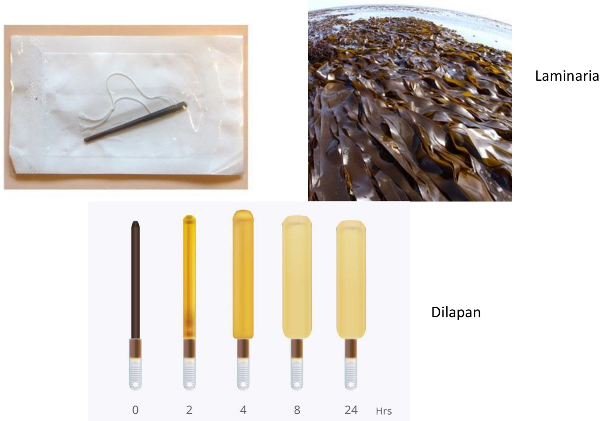
The procedure
Size, gestational age, and whether the uterus is anteverted or retroverted: that's how you avoid perforating it.
Lidocaine, sometimes with vasopressin (less bleeding) or bicarbonate (less sting).
Skip it if the prep worked: every instrument pass carries vaginal flora into the cavity, so less dilating means less pain and infection.
Plastic suction curette. Sharp curettage is unnecessary in most cases.
Complications
| Complication | Clue | Do |
|---|---|---|
| Cervical shock | Vasovagal as the block goes in; seconds to minutes; awake patients only | Self-limited; supportive care |
| Uterine perforation | 1 in 300 to 1 in 1000; most often at the fundus; during dilatation or suction | Finish under ultrasound or laparoscopic guidance; a fundal hole away from organs usually just needs observation |
| Visceral injury | Rare: bowel, bladder or vessel through a perforation | Major surgery, possibly laparotomy |
| Infection | As for any procedure | Prophylaxis for therapeutic abortion, not for missed abortion or loss |
| Cervical trauma | Tear from the tenaculum or dilators | Usually minor; absorbable suture |
| Hemorrhage | Bigger gestation, molar pregnancy, atony, low implantation; general anesthesia relaxes the uterus | Repeat curettage may be needed |
| Hematometra (post-abortal syndrome) | Acute pain, maybe urinary retention, and no bleeding | Re-evacuate immediately |
| Retained products | < 1%: infection signs and/or more or longer bleeding | Repeat D&C, or misoprostol to expel them |
| Asherman's syndrome | Intrauterine adhesions: secondary amenorrhea, infertility | Prevent it: risk from sharp curettage and repeat curettage (e.g. retained placenta) |
Hysterectomy: the words
| Term | What comes out |
|---|---|
| Total | Uterus and cervix |
| Subtotal | Uterus only: cervix stays |
| + Salpingectomy | … and the tubes |
| + Salpingo-oophorectomy | … and the tubes and ovaries |
| "Partial hysterectomy" (lay term) | Usually uterus ± cervix ± tubes, ovaries kept |
Hysterectomy: the five approaches
No abdominal incisions at all; same-day discharge. Hard with a large uterus, narrow introitus or pelvis, poor descent (often nulliparous women), scarring, or adnexa out of reach.
The laparoscope checks for scarring, makes a bladder flap, helps take the tubes and ovaries, and gives a "second look" for bleeding. Same limits as vaginal, since part is still done from below.
When you can't work from below. TLH handles a scarred bladder; laparoscopic suturing takes skill and time. Robotic: articulating instruments manage a bigger uterus, and it's excellent in morbid obesity. Both replace an abdominal hysterectomy, not a vaginal one.
The only one that isn't minimally invasive: 2–3 days in hospital, no same-day discharge. For complex cancers, a very large uterus, patient factors, or complications during a minimally invasive attempt. Pfannenstiel or midline incision.
The Pelvic Mass
Ovarian tumours are named by the cell they came from and sorted by whether they invade. Learn the map, the markers and the traps.
- Name it by the cell: surface epithelium → epithelial; oocyte → germ cell; granulosa, theca, stroma → sex cord–stromal; plus metastases from elsewhere.
- Age sorts it: adults → epithelial; young women → germ cell (teratoma). Most ovarian neoplasms are benign; cancer is likelier after menopause.
- Benign → borderline → malignant is one question: did it invade? Borderline = complex and atypical with no stromal invasion → excise; very good prognosis. Peritoneal implants are serous only.
- High-grade serous carcinoma is the killer: de novo, p53, starts in the tube (STIC), presents late → debulking + staging ± chemo. Low-grade serous grows slowly out of a borderline tumour.
- Markers: dysgerminoma → LDH · yolk sac → AFP · choriocarcinoma → β-hCG · serous → CA-125, which is not a screening test.
- Granulosa cell tumour: estrogen → hyperplasia and PMB; Call–Exner bodies; recurs 10 years on. Bilateral mucinous or Krukenberg (signet rings) → look in the appendix and stomach.
The map
- Serous cystadenoma
- Mucinous cystadenoma — huge, multiloculated
- Brenner tumour (transitional)
- Serous or mucinous: atypia + complex architecture, no stromal invasion
- Serous only → peritoneal implants
- High-grade serous — the killer: de novo, p53, starts in the tube (STIC)
- Low-grade serous — slow, grows out of a borderline tumour
- Mucinous · endometrioid · clear cell
CluesCA-125 (serous) · often bilateral — except mucinous
- Mature cystic teratoma (“dermoid”) — all three germ layers: hair, sebum, teeth
None — an epithelial category
- Dysgerminoma (ovarian seminoma) → LDH
- Yolk sac tumour → AFP
- Choriocarcinoma → β-hCG
- Embryonal carcinoma → weak AFP + β-hCG
- Immature teratoma — primitive neuroepithelium, graded
CluesSerum markers — a sky-high AFP in a young woman goes straight to gynecology
- Fibroma — most common; firm, white, often incidental
- Thecoma
None — an epithelial category
- Granulosa cell tumour — estrogen; Call–Exner bodies; slow, can recur 10 years later
- Sertoli–Leydig cell tumour — androgens
CluesEstrogen → endometrial hyperplasia, post-menopausal bleeding. Androgens → hirsutism, virilization
- Stomach → Krukenberg: bilateral, solid, fibroma-like, signet ring cells
- Appendix → bilateral mucinous tumour ± pseudomyxoma peritonei
- Colorectal · biliary / pancreas · breast (lobular) · endometrium
CluesBilateral · multinodular · diffusely infiltrative — go looking for a primary
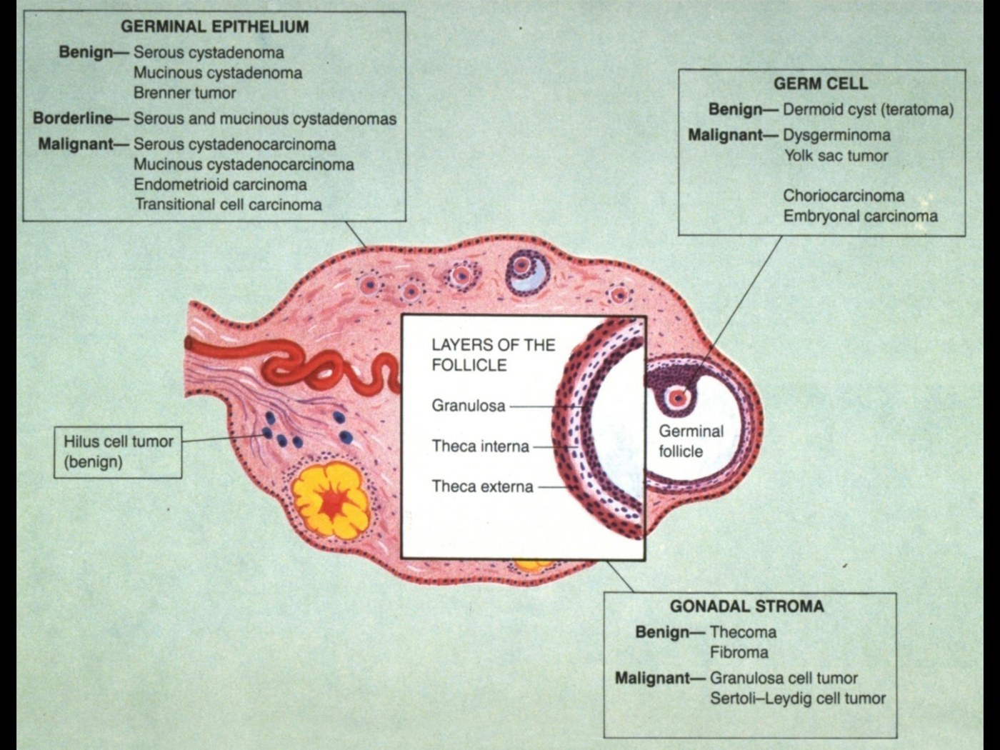
| Symptom | Mechanism |
|---|---|
| Pain | A cyst ruptures or torses |
| Distension | A big mass, or ascites |
| Compression | Bowel or bladder habit changes |
| Systemic | Weight loss, fever, anorexia: usually metastatic |
| Endocrine | Sex cord tumours: estrogen → hyperplasia, bleeding; androgens → hirsutism, virilization |
| Nothing | Many are silent: why ovarian cancer presents late |
Benign, borderline, malignant: did it invade?
A cyst is defined by what lines it and how that lining behaves. Names stick three words together: cell type + architecture + behaviour (serous cyst-adenoma, serous borderline tumour, serous adeno-carcinoma).
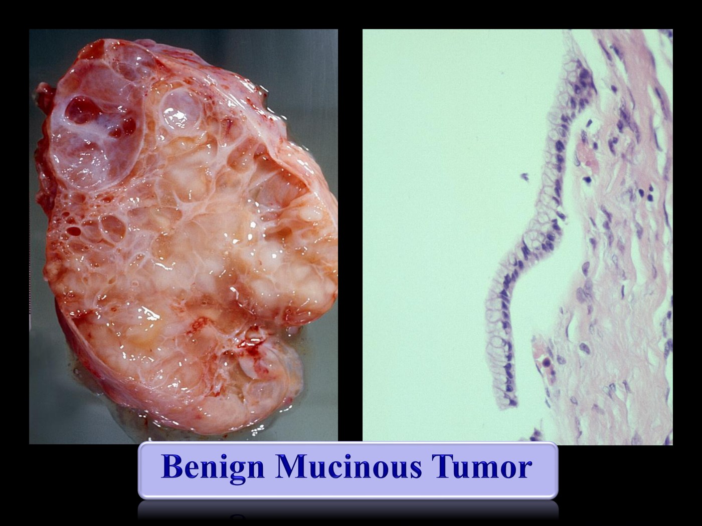
Benign: mucinous cystadenoma. Thin-walled "soap bubble" cysts, no solid areas; one orderly layer, nuclei along the base. Slide from the lecture.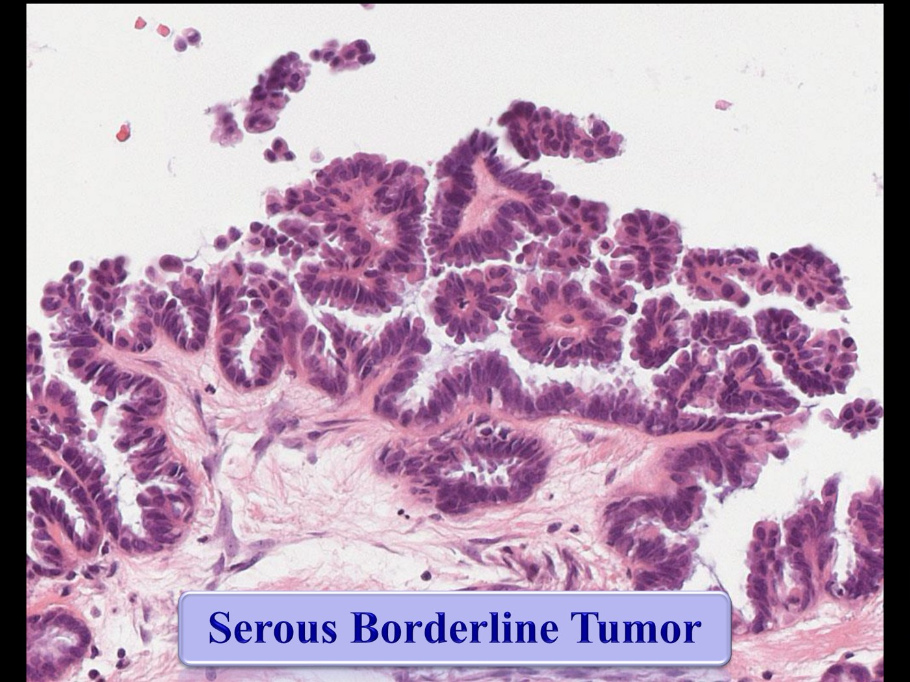
Borderline: serous borderline tumour. Papillae, stratification, tufting, detached clusters, mild atypia, no invasion. Slide from the lecture.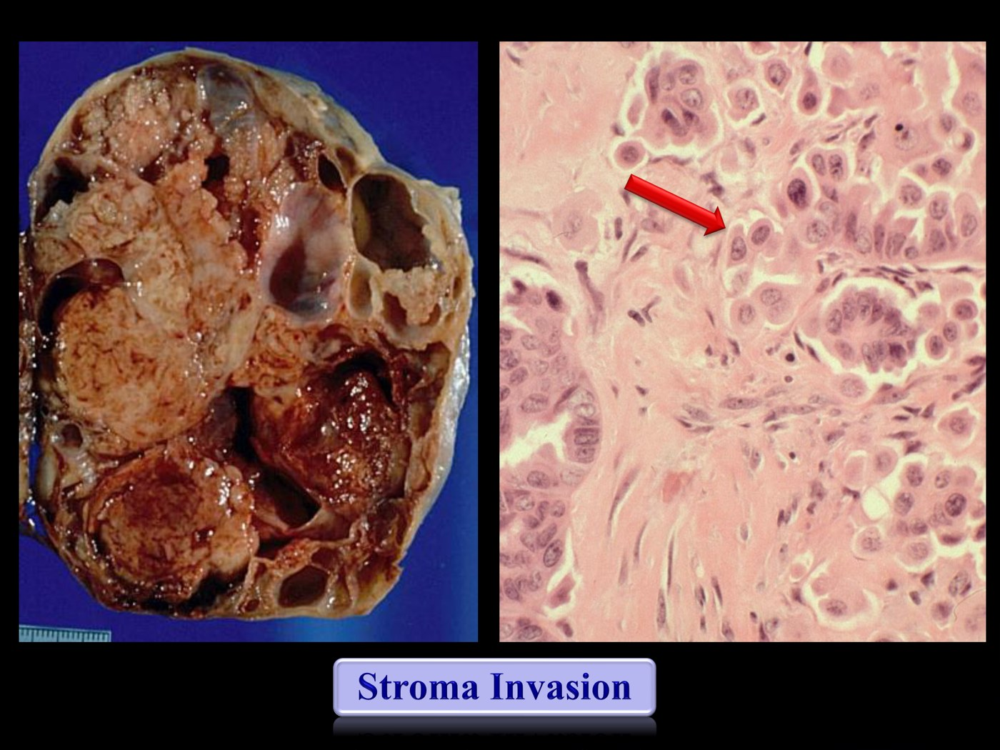
Malignant: serous carcinoma. Much more solid, fleshy tissue, and cells invading the stroma (arrow). Slide from the lecture.| Benign (cystadenoma) | Borderline | Malignant (carcinoma) | |
|---|---|---|---|
| Gross | Thin walls, smooth lining and surface | Papillary excrescences: soft, friable, shaggy | Solid, fleshy areas |
| Lining | Single orderly layer, no mitoses | Stratified, tufting, detached clusters, mild atypia | Atypical cells |
| Stromal invasion | No | No (a little micro-invasion still counts as borderline) | Yes |
| Treatment | Excision | Surgical excision | Surgery (debulking + staging) ± chemo |
| Outlook | Benign | Very good if all removed; slow recurrence years later; can progress to low-grade serous | Good if confined and resected; poor if advanced or high grade |
Serous carcinoma: two diseases
| Low-grade serous | High-grade serous | |
|---|---|---|
| Arises from | A borderline tumour | De novo: skips borderline |
| Driver | — | Often p53 |
| Origin | Ovary | Probably the fallopian tube (STIC) |
| Tempo | Slow (slow isn't benign) | Fast: the one that kills |
| Who | — | Post-menopausal; younger if BRCA1/2 |
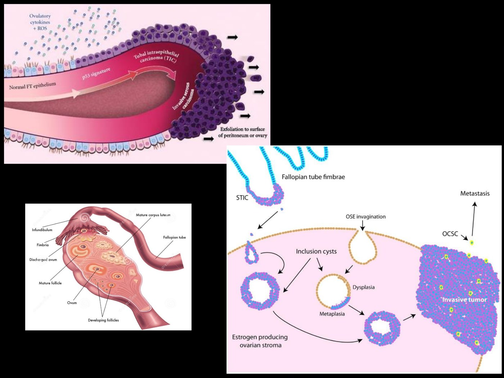
Ovarian cancer: spread, treatment, and why it kills
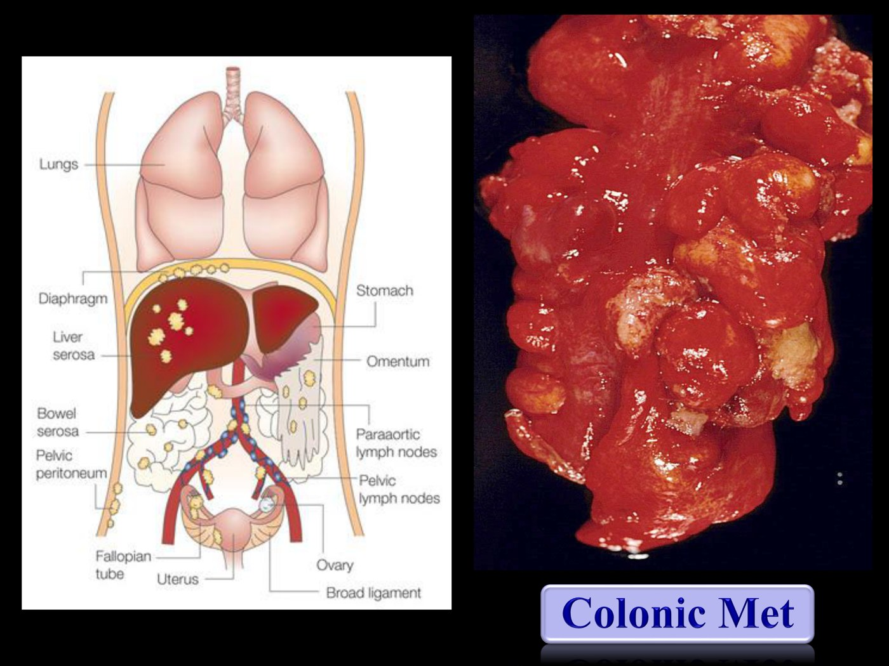
| Treatment | |
|---|---|
| Surgery first | Uterus, tubes and ovaries · omentum · peritoneal biopsies · ± nodes |
| Debulking | Remove as much tumour as possible |
| Staging | Sample suspicious peritoneum even if nothing is visible; stage guides adjuvant therapy |
| Chemotherapy | Advanced stage, high grade; sometimes neoadjuvant to shrink it first |
Germ cell tumours
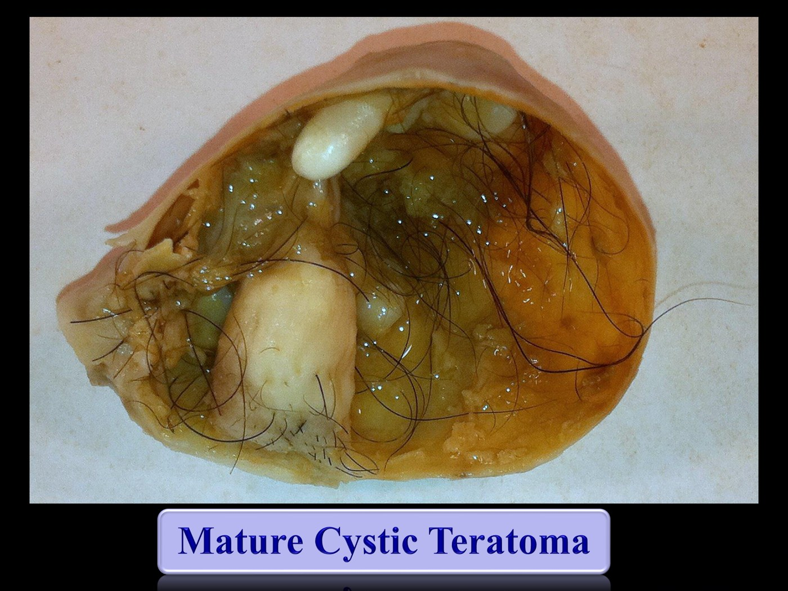
| Tumour | Marker | Note |
|---|---|---|
| Dysgerminoma | LDH | Commonest malignant germ cell tumour; = seminoma |
| Yolk sac tumour | AFP | Endodermal sinus tumour |
| Choriocarcinoma | β-hCG | Differentiates toward placenta |
| Embryonal carcinoma | Weak AFP + β-hCG | — |
| Immature teratoma | Weak AFP + β-hCG | Primitive neuroepithelium; more immature = higher grade |
Sex cord–stromal tumours
| Fibroma | Granulosa cell tumour | |
|---|---|---|
| Behaviour | Benign, common (the commonest sex cord tumour) | Malignant but slow and indolent |
| Classic story | Small firm nodule found at surgery for something else | PMB with hyperplasia or cancer of the endometrium + an adnexal mass |
| Gross | Firm, rubbery, white, homogeneous, no hemorrhage; usually one side | Fleshy with hemorrhagic cysts; ~10% present with rupture and hemoperitoneum |
| Micro | Bland spindled stroma, lots of collagen | Call–Exner bodies (mini follicles), grooved nuclei |
| Hormones | — | Often estrogen |
| Follow-up | — | Late recurrence, even 10 years on: can't stop at 5 years |
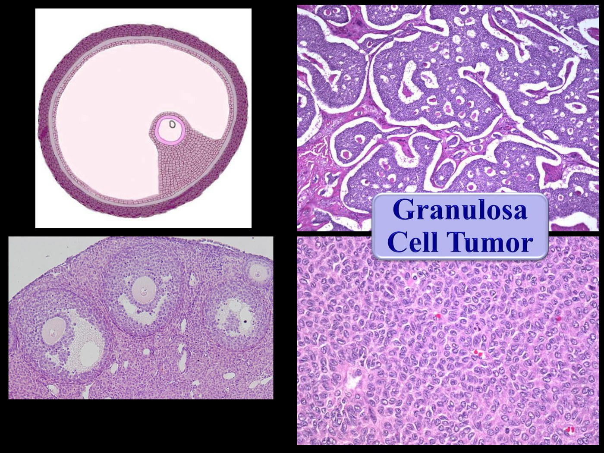
Metastases to the ovary
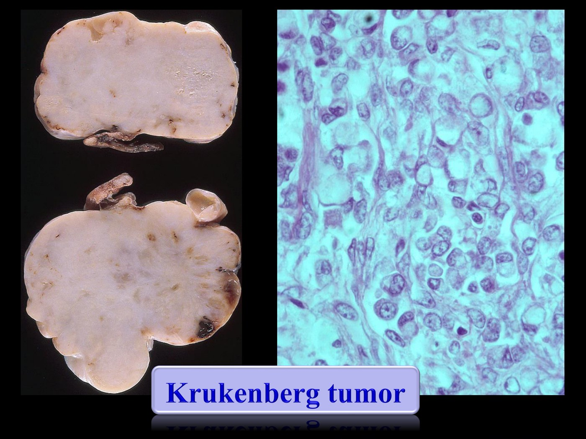
| Clues it's a metastasis |
|---|
| Bilateral |
| Multinodular |
| Diffusely infiltrative (Krukenberg) |
| Bilateral atypical or malignant mucinous tumour: primary ovarian mucinous tumours are usually low grade, low stage and one-sided |
| Primaries: GI (appendix, stomach, colorectal) · biliary, pancreas · breast (lobular) · endometrium |
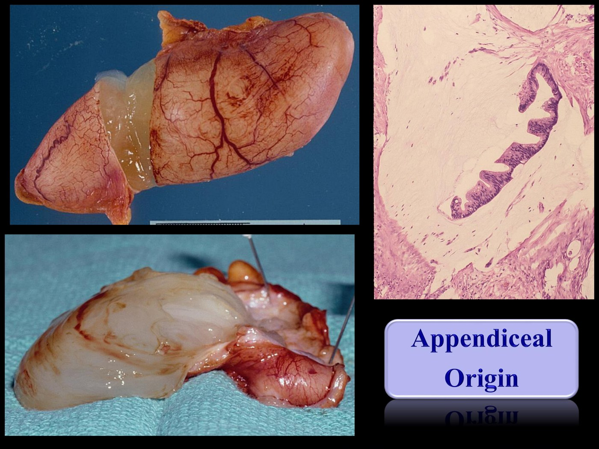
The appendix behind bilateral mucinous ovarian masses: a mucin-filled, mucocele-like lesion. Slide from the lecture.Menopause
Four definitions, why the hormones move the way they do, and the two treatment ladders: hot flashes and GSM.
- Menopause = 12 months without a period (a retrospective diagnosis), average 51–52. Early: 40–45. POI: before 40. Perimenopause = the symptomatic transition, while she's still bleeding.
- The ovaries retire, the brain shouts: estradiol and progesterone ↓, FSH and LH ↑. Diagnose from the periods, not a blood test. POI = irregular periods + FSH > 25.
- Hot flashes (80%): estrogen is the gold standard (~75% fewer). Uterus → add a progestogen. The window: no contraindications, under 60, within 10 years of menopause.
- Contraindications are mostly estrogen's: undiagnosed bleeding, breast cancer, VTE, stroke, CHD, liver disease. A family history of endometrial cancer is not one. The pill's estrogen is 200–300× stronger, hence its longer list.
- Non-hormonal: SSRI/SNRI and gabapentinoids first; NK3 antagonists (fezolinetant). CBT and hypnosis work; yoga and natural products aren't shown to.
- GSM is progressive: lifestyle → lubricant → moisturizer → pelvic physio → local estrogen (or DHEA, ospemifene). Systemic MHT doesn't reliably fix it, so examine (lichen sclerosus).
Four words, four diagnoses
| Term | Definition |
|---|---|
| Menopause | 12 consecutive months without menses; average age in Canada 51–52 |
| Early menopause | Onset at 40–45 |
| POI | Onset before 40 |
| Perimenopause | The symptomatic transition: still bleeding, cycles shorten, then lengthen, then stop. Can start years before the last period |
| After menopause | Level | Why |
|---|---|---|
| Estradiol | ↓ | The ovaries stop working |
| Progesterone | ↓ | |
| FSH | ↑ | Lost feedback inhibition: the brain pushes harder |
| LH | ↑ |
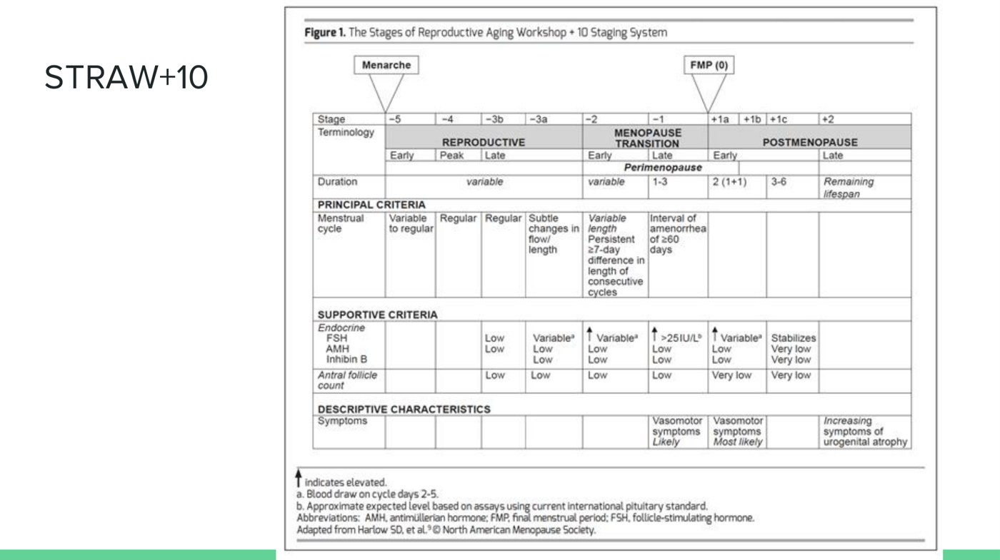
POI and early menopause
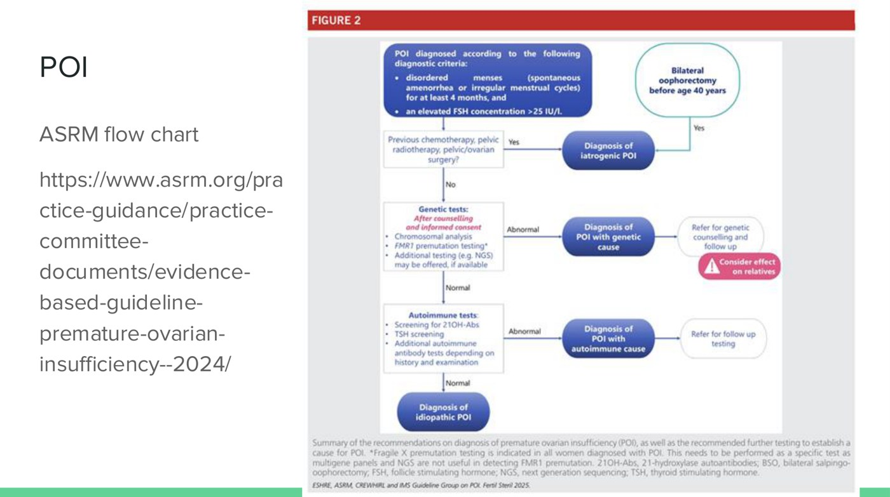
| Menopause before 45 raises | |
|---|---|
| Coronary heart disease events | +50% |
| Stroke | +23% |
| Cardiovascular mortality | +19% |
| All-cause mortality | +12% |
| Plus cognitive decline, poorer bone health, worse symptoms. HRT started before 50 in this group → lower all-cause mortality | |
The symptoms
| Vasomotor symptoms | |
|---|---|
| How common | 80%; about 20% have 20–30 a day |
| The flash | Heat rising from the chest to the face, 3–4 minutes |
| Impact | Mood, cognition, quality of life; severe flashes linked to heart and bone health |
| Cause 1 | KNDy neurons overfire without estrogen → drug: NK3 antagonists |
| Cause 2 | Low serotonin → 5-HT2A up → set point shifts → drug: SSRI/SNRI |
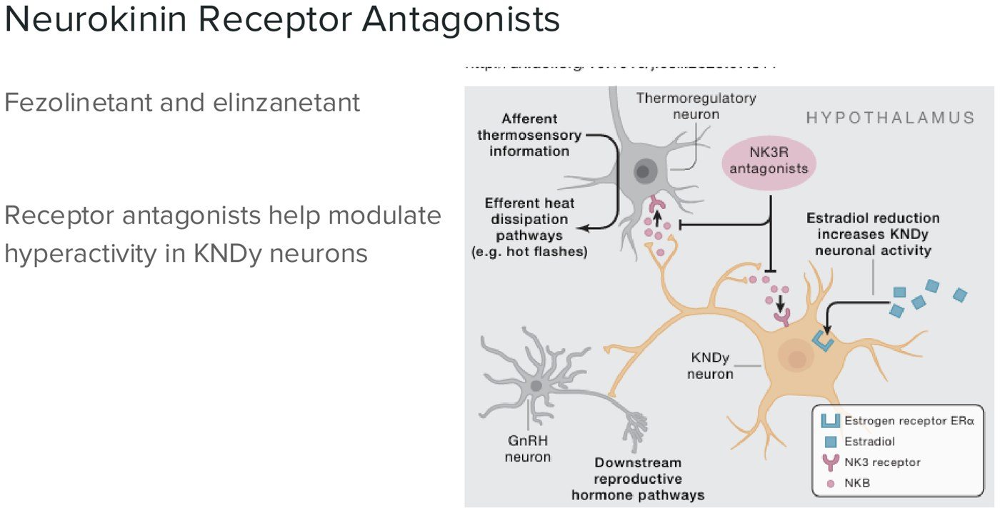
| GSM: genital | Sexual | Urinary |
|---|---|---|
| Dryness | Little lubrication | Urgency |
| Burning | Dyspareunia | Dysuria |
| Irritation | Low libido | Recurrent UTI |
| GSM on exam |
|---|
| Pale vulva, prepuce and clitoris; smaller labia; less pubic hair |
| Introital stenosis; fragile, thin vestibule |
| Vagina: fewer secretions, narrower, less elastic, pale |
| pH > 5: no estrogen → no glycogen → no lactobacilli |
Treating GSM: the ladder
Gentle vulvar hygiene (no scented products, douching or depilatory creams), less caffeine (a bladder irritant), and regular sexual activity, which keeps blood flow and elasticity.
Cut friction during sex. Water-based ones help most.
Polycarbophil or hyaluronic acid bind water and mimic a biofilm. Used regularly, not just before sex.
Very effective, especially for dyspareunia.
Vaginal cream, tablet or ring. Alternatives: vaginal DHEA (converted in the mucosa) or oral ospemifene (a SERM).
Menopausal hormone therapy
| MHT | |
|---|---|
| For hot flashes | Estrogen: the gold standard, ~75% reduction |
| With a uterus | Must add progesterone |
| Estrogen routes | Pill, patch or gel |
| Progestogen routes | Oral, or an LNG-IUD (Mirena, Kyleena: 5 years of endometrial protection) |
| Safest start | No contraindications, under 60, within 10 years of menopause |
| Contraindications to estrogen | To progestogen |
|---|---|
| Undiagnosed abnormal vaginal bleeding | Undiagnosed abnormal vaginal bleeding |
| Breast cancer (known, suspected or past) | Breast cancer (current or past) |
| Other estrogen-dependent cancers | |
| Coronary heart disease · stroke | |
| VTE (active or past) · thrombophilia | |
| Active liver disease · pregnancy |
Without hormones
| Drug class | Note |
|---|---|
| SSRIs / SNRIs | 27–61% fewer flashes; usually tried first; lower doses than for depression |
| Gabapentinoids | 45–71% fewer; also first-line in practice |
| NK3 antagonists | Fezolinetant, elinzanetant |
| Clonidine | In the SOGC guideline, not the Menopause Society's |
| Oxybutynin | For urinary incontinence; dry mouth, constipation, blurred vision |
| Lifestyle | Evidence |
|---|---|
| CBT, clinical hypnosis | Shown to work |
| Weight loss | May help |
| Cooling, avoiding triggers | Useful |
| Yoga, exercise | Good for health, not shown to cut flashes |
| Natural health products | No clear benefit |
| Daily targets | Sodium < 1300 mg · vitamin D 800 IU · calcium 1200 mg |
The visit
| Cover | Why |
|---|---|
| LMP, cycle pattern, heavy or intermenstrual bleeding | Abnormal bleeding (especially over 40) → consider an endometrial biopsy |
| On MHT and still bleeding beyond 6 months | Endometrial biopsy |
| Contraindications: clots, breast cancer | Always, before MHT |
| Vulvar exam if she has GSM symptoms | Rule out a skin condition such as lichen sclerosus (steroid + vaginal estrogen; it scars and carries a cancer risk) |
| Is cervical screening due? | Check, as for any visit (4.8) |
| Heart, bone and cancer risk | Diet, aerobic exercise, healthy weight, vitamin D and calcium |
The Breast
Three complaints (lump, pain, discharge), who gets screened, and the pathology underneath: where each lesion arises and what each report means.
- Three complaints: lump, pain, discharge. The older the woman, the more likely any of them is serious.
- Worrisome lump: single, hard, immovable, irregular, > 2 cm. Skin change and retraction are late. Under 35 → ultrasound; 35+ → mammogram ± US. Pre-menopausal and benign-feeling → recheck after her period; post-menopausal or high risk → image now.
- Pathologic discharge (one side, one duct, spontaneous, bloody/serous, mass, over 50) → usually a papilloma; cancer 5–10%. Mastitis: cephalexin, keep feeding; abscess → aspirate before I&D; redness that won't settle → biopsy.
- Screening: OBSP, 50–74, every 2 years, self-referral; high risk → yearly. No screening breast exams or self-exam teaching. Lifetime risk 1 in 8.
- In situ vs invasive = is the myoepithelial layer and basement membrane intact? DCIS: precursor → excise. LCIS: risk marker for both breasts → follow up. Atypical hyperplasia: 4–5× the risk.
- ER/PR+: good prognosis, predicts endocrine therapy. HER2+: bad prognosis, predicts trastuzumab. Axillary nodes are the biggest prognostic factor. Inflammatory carcinoma = mastitis look + dermal lymphatic tumour.
"Doc, I feel a lump"
| Worrisome | Reassuring |
|---|---|
| Single | Smooth: usually benign |
| Hard | Pain is usually benign (but 8% of cancers hurt) |
| Immovable | Nipple discharge is uncommon with cancer |
| Irregular borders | |
| > 2 cm |
| Palpable lump: what it usually is |
|---|
| Normal fibroglandular tissue (it fluctuates in young women) |
| Breast cyst |
| Fibroadenoma |
| Breast cancer: about 10% of palpable masses |
| History: age, where, how and when found, skin change, size change, change with the cycle, axillary lumps, family history |
 Screening mammogram that found a small spiculated mass (circled). Compare the two sides. Slide from the lecture.
Screening mammogram that found a small spiculated mass (circled). Compare the two sides. Slide from the lecture.
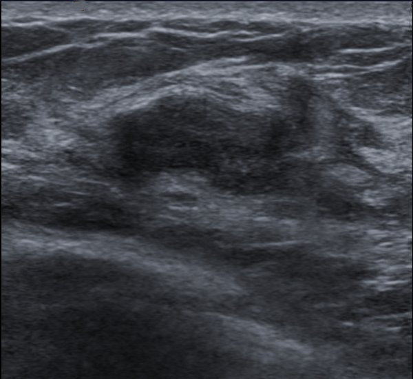
Fibroadenoma on ultrasound: an oval, well-defined, dark solid nodule. Under 35, ultrasound comes first. Nevit Dilmen, CC BY-SA 3.0, via Commons.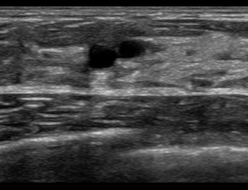
Breast cysts on ultrasound: round, smooth-walled and black, because they are fluid. schomynv, public domain, via Commons."Doc, my breast is sore"
| Cyclical (two thirds) | Non-cyclical |
|---|---|
| Hormonal: ducts and stroma react | Mastitis or other infection |
| Starts in the luteal phase, ends with the period | Medication-induced: HRT, the pill, tamoxifen |
| Examine the breast and the chest wall | Cooper's ligament stretch (large breasts); chest wall: ribs, sternum, pectorals, shoulder |
| Treating cyclical pain | |
|---|---|
| Support bra, compresses, acetaminophen | First-line |
| Stop smoking | Nicotine raises epinephrine in breast tissue |
| Low-fat, high-complex-carb diet | Helped in trials |
| Stop the OCP, HRT or tamoxifen | If one is the trigger |
| Cutting coffee | Myth: not shown to help |
Investigating pain: under 35 with a normal exam, no tests. Anything suspicious goes down the lump pathway. Only 8% of breast cancers present with pain, but the older the woman, the more likely pain means something.
Mastitis and abscess
| Step | |
|---|---|
| 1. Antibiotics | Cephalexin: Staph aureus is the commonest organism (Staph or Strep) |
| 2. Keep draining | Continue breastfeeding or pumping, emptying the breast |
| 3. Not better | Ultrasound → ultrasound-guided aspiration ± IV antibiotics |
| 4. Last | Incision and drainage |
| Redness or a mass persists | Biopsy and mammogram |
"Doc, I have nipple discharge"
| Physiologic (galactorrhea) | Pathologic (from a lesion) | |
|---|---|---|
| Sides | Usually both | One |
| Ducts | Several | One |
| How | Expressed by compression | Spontaneous |
| Colour | Any | Bloody or serous |
| Also | Not pregnancy or lactation | A mass; age over 50 |
| Causes |
|---|
| Galactorrhea: nipple stimulation · hyperprolactinemia (pituitary) · dopamine-blocking drugs (methyldopa) · chest wall injury or surgery · CKD, hypothyroidism, cirrhosis, stress |
| Pathologic: papilloma (commonest, benign) · duct ectasia · fibrocystic change · cancer in only 5–10% |
| Work-up: look at the nipple (Paget's), then periareolar ultrasound + mammogram, biopsy as needed |
Men
| Newborns and pubertal boys | Adult gynecomastia (commonest at 50–69) | |
|---|---|---|
| Feels like | Soft, under the nipple, usually one side | A palpable mass |
| Do | Reassure: 85–90% resolve in 2 years. Refer if it extends past the areola or bothers him | Mammogram or ultrasound. Benign, but find out why: spironolactone, finasteride, anabolic steroids or testosterone (ask directly), then thyroid, liver and kidney bloods |
Screening, risk and genes
| Risk | Screen |
|---|---|
| Usual | 50–74: two-view mammogram every 2 years (OBSP, self-referral, books its own follow-up) |
| High | Every year |
| High risk = one first-degree relative under 50 · two first-degree relatives at any age · ovarian cancer in a first-degree relative or herself · male breast cancer in the family · ADH, ALH, radial scar, phyllodes or LCIS on pathology · density > 75% | |
| Task Force (CTFPHC) | Says |
|---|---|
| Women 40–49 | Recommend not screening (conditional on her values) |
| Women 50–74 | Mammogram every 2–3 years (Ontario: 2) |
| Not at increased risk | No MRI, tomosynthesis or ultrasound screening |
| Clinical breast exam | Not for screening (but always for a symptom) |
| Self-exam | Don't advise it |
| Refer for genetic testing if… |
|---|
| Breast cancer under 35 |
| Under 50 with two first- or second-degree relatives (one under 50, bilateral, or serous ovarian) |
| 3 or more relatives with breast or ovarian cancer |
| Male breast cancer · Ashkenazi Jewish with breast cancer |
| BRCA-negative under 35 with sarcoma, brain tumour, leukemia or adrenal cancer in the family → Li-Fraumeni (p53) |
| BRCA carrier | Effect |
|---|---|
| Lifetime risk | Breast 55–85%, ovarian 15–65% |
| Prophylactic mastectomy | ~90% reduction |
| ± Oophorectomy | ~50% reduction |
| Yearly MRI + mammogram | More sensitive; more false positives |
| Tamoxifen | ~50% reduction |
The pathology map
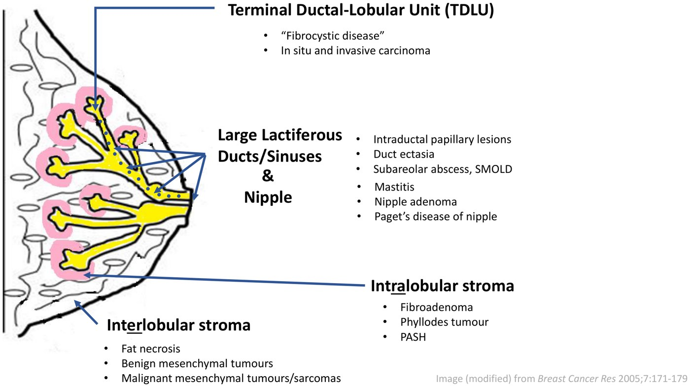
| Benign lesion | Clue | What happens |
|---|---|---|
| Fat necrosis | Firm, irregular, maybe skin retraction; often superficial, ± trauma | Mimics cancer → biopsied |
| Acute mastitis | Lactating; tense, hot, painful breast | Clinical diagnosis; antibiotics, keep draining |
| Intraductal papilloma | 30s–50s, bloody nipple discharge | Excised (may hide atypia) |
| Fibroadenoma | 20s–30s; discrete, mobile, rubbery, non-tender | Often just followed if imaging and biopsy agree |
| Fibrocystic change | "Lumpy, bumpy", varies with the cycle | Physiological, not a disease |
 Fibroadenoma: round, well defined, shells out; stroma + ducts, no atypia. Its aggressive cousin is the phyllodes tumour. Slide from the lecture.
Fibroadenoma: round, well defined, shells out; stroma + ducts, no atypia. Its aggressive cousin is the phyllodes tumour. Slide from the lecture.
 Intraductal papilloma: a dilated duct filled by friable tumour and blood, the source of bloody discharge. Slide from the lecture.
Intraductal papilloma: a dilated duct filled by friable tumour and blood, the source of bloody discharge. Slide from the lecture.
| Risk tier | Future invasive cancer | Lesions |
|---|---|---|
| Non-proliferative | ×1 (no change) | Fibrocystic change, cysts, duct ectasia, apocrine change, fibroadenoma |
| Proliferative, no atypia | ×1.5–2 | Florid hyperplasia, papilloma, sclerosing adenosis, radial scar, complex fibroadenoma |
| Atypical hyperplasia | ×4–5 (×9–10 with family history) | ADH, ALH: not cancer, but ADH sits closest to a precursor → annual screening |
In situ vs invasive

| DCIS | LCIS | |
|---|---|---|
| Found | Linear, casting or pleomorphic calcifications on mammography; sometimes discharge | By chance on a biopsy for something else; nothing to see |
| Means | Precursor of invasive cancer | Risk marker (non-obligate precursor), both breasts |
| Do | Excise completely, negative margins | Close follow-up |
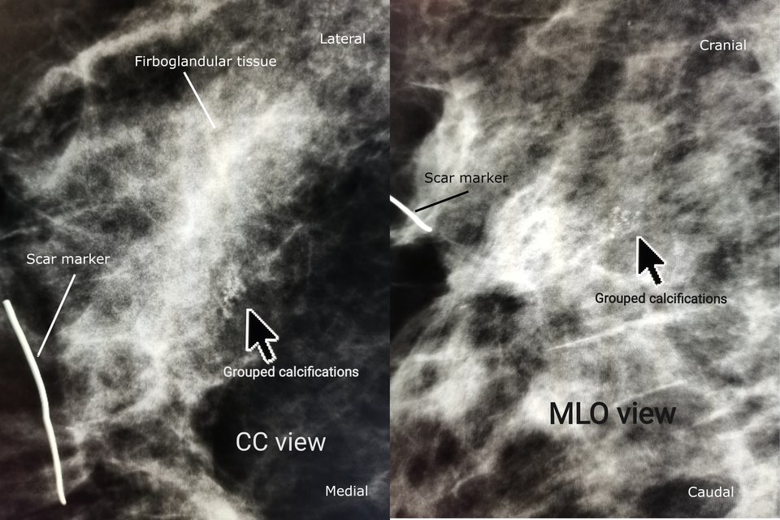
Grouped calcifications (arrows) on two mammogram views: how DCIS often shows up. The white line is a scar marker. Cerevisae, CC BY-SA 4.0, via Commons.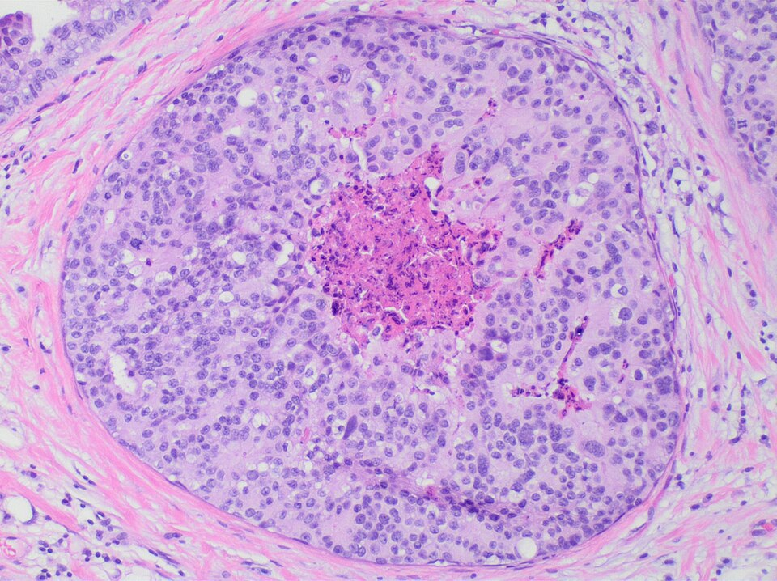
DCIS: a duct stuffed with malignant cells around central necrosis, but its smooth outline is intact, so it is in situ. Mikael Häggström, CC0, via Commons.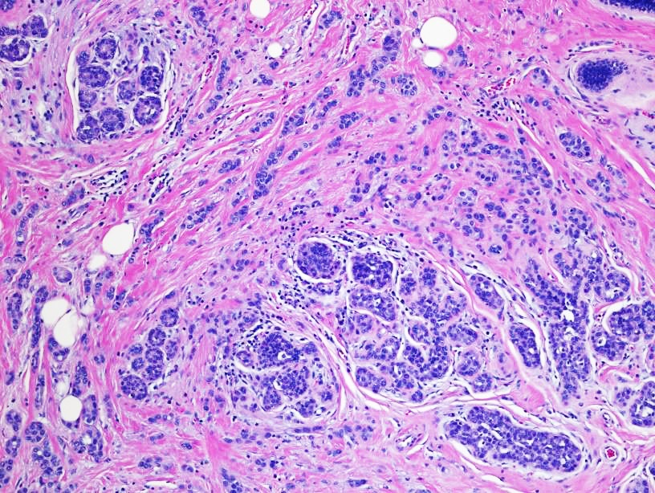
Lobular, both ways: lobules distended by uniform cells (LCIS) beside cells infiltrating the stroma in cords and single files (invasive lobular), the single-cell pattern that can make a lobular metastasis to the ovary look Krukenberg-like. Ryan, Tawfik, Jensen & Anant, CC BY 4.0, via Commons.
| Invasive type | Share | Outlook |
|---|---|---|
| No special type (ductal) | 80% | The reference |
| Special types: tubular, cribriform, mucinous, medullary, papillary | 20% | Pure forms do better |
| Lobular | Similar, or slightly worse | |
| Metaplastic | Worse |
Paget's disease and inflammatory carcinoma
| Paget's disease of the nipple | Inflammatory carcinoma | |
|---|---|---|
| Looks like | Red, scaly, eczema-like nipple and areola; erosion or ulcer | Diffuse acute mastitis: red, swollen breast, often peau d'orange |
| Underneath | Always an underlying carcinoma (DCIS or invasive; invasive if there's a mass); cells travel up the ducts into the skin | Tumour blocking the dermal lymphatics |
| Diagnose | Nipple skin biopsy: cells with clear halos in the epidermis | Punch biopsy (office or ED). Needs both the clinical look and the lymphatic tumour |
| Means | Often a wide resection | T4 by definition; poor prognosis |
Prognosis
| Major prognostic factors |
|---|
| Invasive (worse) vs in situ |
| Distant metastases: lung, pleura, liver, bone (also adrenal, brain) |
| Axillary nodes: the single most important factor when there are no distant mets |
| Tumour size; local extension (muscle, skin fixation, nipple retraction, peau d'orange) |
| Inflammatory carcinoma |
| Marker | Prognosis | Predicts |
|---|---|---|
| ER / PR + | Good | Benefit from tamoxifen or an aromatase inhibitor |
| HER2 + | Bad | Response to trastuzumab |
Epidemiology: the commonest cancer in Canadian women and the second cause of cancer death (lung is first); 75% occur at 50+; 80% sporadic. High-penetrance genes: BRCA1/2, p53 (Li-Fraumeni), PTEN (Cowden), STK11 (Peutz-Jeghers); moderate: CHEK2, ATM. Radiation to a still-developing breast (mediastinal radiation for Hodgkin lymphoma) raises the risk.
Sexual Health
How the response works, how to ask about it, and how to make your office a place where people answer.
- Sexual health (WHO) = physical, emotional, mental and social well-being, not just the absence of disease. Concerns are common (50–98% of women; ~40% of men, mostly ED and premature ejaculation), so ask proactively.
- Three models: Masters & Johnson (excitement → plateau → orgasm → resolution), Kaplan (desire → excitement → orgasm), Basson's circle (arousal can trigger desire).
- Men have a refractory period, longer with age; women don't, so they can have multiple orgasms. In women, genital response and felt arousal often don't match.
- History: permission, confidentiality early, their words, open questions, silence, repeat from another angle. 45–60 minutes is ideal, so book a return visit.
- The 5 Ps: Partners, Practices, Protection, Past STIs, Pregnancy plans (± Pleasure). There is no validated comprehensive tool.
- Safe space: check your own bias first; the two-step gender question; pronouns; inclusive forms; say "partner"; be trauma-informed.
The response cycle
| Model | Stages | Key idea |
|---|---|---|
| Masters & Johnson (1966) | Excitement → plateau → orgasm → resolution | First lab study; no desire stage |
| Kaplan (1979) | Desire → excitement → orgasm | Added desire first |
| Basson (circular) | A loop | Start from intimacy or other motives; arousal triggers desire; initial desire is variable |
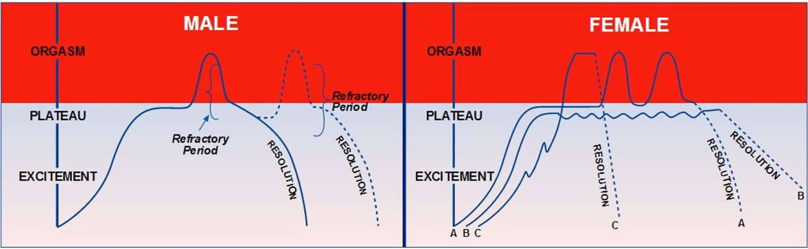
| Worth knowing | |
|---|---|
| Refractory period | Men only; lengthens with age |
| Orgasm | Contractions every 0.8 s in both; primarily cerebral (possible after complete spinal cord injury) |
| Women's arousal | Clitoral engorgement via nitric oxide; genital response and felt arousal often don't match (in men they usually do) |
| ED | Climbs every decade (52% of men 40–70): re-ask as they age |
| Pro-sexual | Inhibitory |
|---|---|
| Noradrenaline, dopamine, melanocortin, oxytocin, some serotonin receptors | Prolactin, serotonin at 5-HT2 and 5-HT3, glutamate, vasopressin, GABA |
Taking the history
| Technique | Looks like |
|---|---|
| Ask permission, proactively | Don't make them raise it |
| Listen for the side door | "By the way, I have a discharge down below" |
| Confidentiality early | Including between partners of a couple |
| Their words | "Sex" rather than "intercourse"; clarify vague ones |
| Open questions, silence | Let them finish |
| Repetition | "An STI?" No. "Ever treated for gonorrhea?" "Oh yes, once" |
| Time | 45–60 min is ideal: book a longer follow-up |
| Composure | Don't show embarrassment; stay non-judgmental |
| The 5 Ps | Ask about |
|---|---|
| Partners | How many (month, 6 months, lifetime), how they identify, satisfaction |
| Practices | Vaginal, oral, anal; toys |
| Protection | How they protect themselves; HIV risk; testing |
| Past STIs | Any sex-related infections, treated before |
| Pregnancy plans | Trying to conceive? Contraception? |
| Pleasure (optional) | Pain, lubrication, orgasm, erection, ejaculation |
A safe space, and the words
| Do |
|---|
| Self-assess your comfort and implicit biases first |
| Staff trained in culturally sensitive terms; gender-inclusive forms; diverse images |
| Two-step method: ask gender identity and sex assigned at birth separately; use self-identified pronouns |
| Gender identity, pronouns and sexual preference on the intake form |
| Say "partner"; "How many partners in the past year?", not "Are you monogamous?" |
| No moral or religious judgment; respect a right to decline; be trauma-informed |
| Term | Means |
|---|---|
| Sex | Assigned at birth from biology |
| Gender identity | One's own sense of gender: cisgender if it matches sex, transgender if not |
| Gender expression / perception | How one shows it / how others read it |
| Sexual orientation | Who one is attracted to: a separate thing |
| Heterosexual · homosexual · bisexual · pansexual | Other gender · same gender · men and women · any gender |
| Asexual | No sexual attraction. Not celibacy, which is a choice |
Final quiz
51 new questions, mostly clinical vignettes like the progress test. Your results compare each topic with your warm-up.